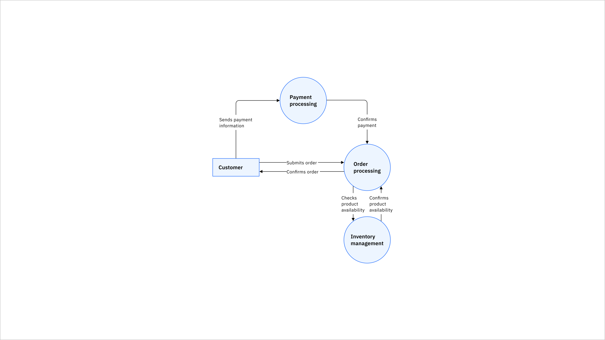
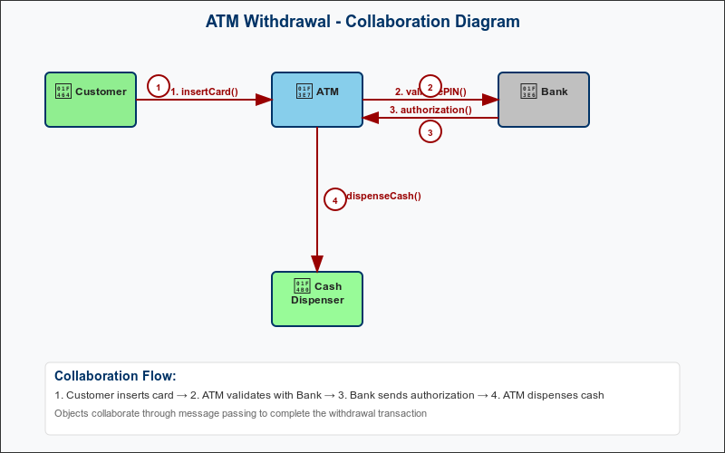

Software Engineering Module 2
Complete Study Guide - Requirement Engineering, Software Design & Object Modeling
1. Requirement Engineering
1.1 Feasibility Study
A feasibility study determines whether a proposed system is viable and worth developing.
- Technical Feasibility: Can the system be built with current technology?
- Economic Feasibility: Is the project cost-effective?
- Operational Feasibility: Will the system work in the current environment?
- Schedule Feasibility: Can the project be completed on time?
Feasibility Study Process
1.2 Functional and Non-Functional Requirements
| Functional Requirements | Non-Functional Requirements |
|---|---|
| What the system should do | How the system should perform |
| User authentication, data processing | Performance, security, usability |
| Business logic, user interactions | Reliability, scalability, maintainability |
Functional: "The system shall allow users to log in with username and password"
Non-Functional: "The system shall respond to login requests within 2 seconds"
1.3 Requirement Gathering
- Interviews: One-on-one discussions with stakeholders
- Questionnaires: Written surveys for large groups
- Observation: Watching users perform tasks
- Document Analysis: Reviewing existing documentation
- Prototyping: Building mockups for feedback
- Brainstorming: Group idea generation sessions
1.4 Requirement Analysis and Specification
Process of examining, documenting, and validating requirements.
Requirement Analysis Process
Raw Requirements → Analysis → Modeling → Validation → Specification Document
↓
Prioritization
↓
Conflict Resolution
↓
Feasibility Check
2. Software Design
2.1 Issues in Software Design
- Complexity: Managing system complexity as it grows
- Maintainability: Ensuring code can be easily modified
- Scalability: Designing for future growth
- Reusability: Creating components that can be reused
- Performance: Balancing functionality with speed
- Security: Protecting against vulnerabilities
2.2 Modularity
Breaking down a system into smaller, manageable components.
• Easier to understand and maintain
• Parallel development possible
• Code reusability
• Easier testing and debugging
Modular System Structure
Main System
|
┌─────────────┼─────────────┐
| | |
Module A Module B Module C
| | |
┌───┼───┐ ┌───┼───┐ ┌───┼───┐
A1 A2 A3 B1 B2 B3 C1 C2 C3
2.3 Coupling & Cohesion
| Coupling (Low is Better) | Cohesion (High is Better) |
|---|---|
| Degree of interdependence between modules | Degree of interaction within a module |
| Data, Control, Common, Content | Functional, Sequential, Communicational |
// Example of Low Coupling, High Cohesion
class Calculator {
// High cohesion - all methods related to calculation
public int add(int a, int b) { return a + b; }
public int subtract(int a, int b) { return a - b; }
public int multiply(int a, int b) { return a * b; }
}
class Display {
// Low coupling - minimal dependency on Calculator
public void showResult(int result) {
System.out.println("Result: " + result);
}
}2.4 Data Flow Diagrams (DFD)
Visual representation of how data flows through a system.
- External Entity: Rectangle - data source/destination
- Process: Circle - transforms data
- Data Store: Open rectangle - stores data
- Data Flow: Arrow - shows data movement
Sample DFD - Library System (Textual)
[Student] ──book request──→ (1.0 Check Availability) ──query──→ [Book Database]
↑ | |
| | |
book status book details book info
←──────────────────────────────┴────────────────────────────────────┘
Sample DFD (Visual)
2.5 Function Oriented Design
Design approach that focuses on functions and their interactions.
• Top-down approach
• Emphasis on functions over data
• Hierarchical decomposition
• Used in structured programming
2.6 Software Metrics and SCM
- Size Metrics: Lines of Code (LOC), Function Points
- Complexity Metrics: Cyclomatic Complexity
- Quality Metrics: Defect Density, Reliability
- Productivity Metrics: Development time, Cost
- Version Control (Git, SVN)
- Change Management
- Build Management
- Release Management
2.7 Function Point Analysis (FPA)
Function Point Analysis is a standardized method to measure the size and complexity of software based on its functionality.
Components:
- External Inputs (EI): User inputs (e.g., forms).
- External Outputs (EO): Outputs to users (e.g., reports).
- External Inquiries (EQ): Input-output pairs with no update (e.g., search).
- Internal Logical Files (ILF): Internal data (e.g., customer database).
- External Interface Files (EIF): External data (e.g., imported Excel).
Each component is weighted (Low, Avg, High) and added to compute Unadjusted Function Points (UFP).
Example:
| Component | Count | Weight | Total |
|---|---|---|---|
| EI | 5 | 3 | 15 |
| EO | 3 | 4 | 12 |
| EQ | 4 | 3 | 12 |
| ILF | 2 | 7 | 14 |
| EIF | 1 | 5 | 5 |
| Total UFP | 58 |
Adjust using Complexity Adjustment Factor (CAF):
FP = UFP × (0.65 + 0.01 × CAF)
If CAF = 10,
FP = 58 × (0.65 + 0.01 × 10) = 58 × 0.75 = 43.5
2.8 COCOMO (Constructive Cost Model)
COCOMO estimates effort (in person-months) and time for software development based on project size (in KLOC).
Basic COCOMO Formula:
Effort = a ⋅ (KLOC)b Time = c ⋅ (Effort)d
Modes:
| Mode | Description | a | b | c | d |
|---|---|---|---|---|---|
| Organic | Small, in-house, experienced team | 2.4 | 1.05 | 2.5 | 0.38 |
| Semi-Detached | Intermediate projects | 3.0 | 1.12 | 2.5 | 0.35 |
| Embedded | Complex, constrained | 3.6 | 1.20 | 2.5 | 0.32 |
Example (Organic Project, 32 KLOC):
Effort = 2.4 × (32)1.05 ≈ 91.6 person-months Time = 2.5 × (91.6)0.38 ≈ 18.3 months
2.9 LOC (Lines of Code)
LOC is the simplest metric for measuring the size of a program by counting the number of lines in source code.
Types:
- Physical LOC: All lines including comments and whitespace.
- Logical LOC: Actual executable statements.
Example:
// Compute sum
int sum = 0; // Initialize
for (int i = 0; i < 10; i++) {
sum += i;
}
Physical LOC = 5
Logical LOC = 3 (declaration, loop, increment)
2.10 Cyclomatic Complexity
Cyclomatic Complexity (by McCabe) measures the number of linearly independent paths in code, indicating test case minimums and code complexity.
Formula:
V(G) = E - N + 2P
- E: Number of edges
- N: Number of nodes
- P: Number of connected components (usually 1)
OR
For programs composed of sequential decision statements (like if, while, for), the cyclomatic complexity V(G) can often be determined by counting the number of decision points (D) and adding 1. This is because each decision point typically adds one node and two edges, increasing the complexity by one.
V(G) = D + 1
Example:
void process(int x) {
if (x > 0) {
x++;
} else {
x--;
}
if (x % 2 == 0) {
System.out.println("Even");
}
}
2 decision points (2 if)
V(G) = 2 + 1 = 3
→ 3 test cases needed for full branch coverage.
3. Object Modeling
3.1 User Interface Design
- Consistency: Uniform look and behavior
- Simplicity: Easy to understand and use
- Feedback: System responds to user actions
- Accessibility: Usable by people with disabilities
- Efficiency: Minimize user effort
3.2 Unified Process
Iterative and incremental software development framework.
Unified Process Phases
| Phase | Goal | Key Activities |
|---|---|---|
| Inception | Define project scope | Requirements gathering, feasibility |
| Elaboration | Analyze requirements | Architecture design, risk analysis |
| Construction | Build the system | Coding, testing, integration |
| Transition | Deploy to users | Beta testing, deployment, training |
3.3 Object Modeling using UML
UML (Unified Modeling Language) is a standard notation for modeling software systems.
• Standardized notation
• Visual representation
• Supports different views
• Tool support available
4. UML Diagrams
4.1 Use Case Diagram
Shows interactions between users (actors) and system functions (use cases).
Library Management System - Use Case (Textual)
┌─────────────────────────────────────────┐
│ Library Management System │
│ │
│ ┌─────────────┐ ┌─────────────────┐ │
Student ──────────── │ Borrow Book │ │ Return Book │ │
│ └─────────────┘ └─────────────────┘ │
│ │
│ ┌─────────────┐ ┌─────────────────┐ │
Librarian ────────── │ Add Book │ │ Remove Book │ │
│ └─────────────┘ └─────────────────┘ │
└─────────────────────────────────────────┘
Use Case Diagram (Visual)

- Actor: External entity that interacts with system
- Use Case: Specific functionality provided by system
- System Boundary: Rectangle defining system scope
- Relationships: Association, Include, Extend
4.2 Sequence Diagram
Shows interactions between objects over time.
Login Process - Sequence Diagram
User LoginForm Database Session
| | | |
|─enter_creds→| | |
| |─validate───→| |
| |←───result────| |
| |─create_session────────────→|
| |←───session_id──────────────|
|←success_msg─| | |
| | | |
4.3 Communication (Collaboration) Diagram
Shows interactions between objects with emphasis on relationships.
ATM Withdrawal - Communication Diagram (Textual)
ATM ──1: insert_card──→ CardReader
│ │
│ │
│←──2: card_data──────────┘
│
│──3: validate──→ Bank
│ │
│←─4: approved─────┘
│
│──5: dispense──→ CashDispenser
Communication Diagram (Visual)
4.4 Activity Diagram
Shows workflow and business processes.
Order Processing - Activity Diagram
● Start
↓
┌─────────────┐
│ Receive Order│
└─────────────┘
↓
┌─────────────┐
│Check Stock │
└─────────────┘
↓
◊ In Stock?
↙ ↘
[Yes] [No]
↓ ↓
┌─────────────┐ ┌─────────────┐
│Process Order│ │ Backorder │
└─────────────┘ └─────────────┘
↓ ↓
┌─────────────┐
│Ship Product │
└─────────────┘
↓
● End
4.5 State Chart Diagram
Shows states of an object and transitions between states.
Phone Call - State Chart
● ──→ [Idle]
│
dial number
↓
[Dialing] ──busy──→ [Busy]
│ │
connected hang up
↓ ↓
[Connected] ──hang up──→ [Idle]
│
disconnected
↓
[Idle]
4.6 Structural UML Diagrams
Class Diagram
Shows classes, attributes, methods, and relationships.
Class Diagram Example
┌─────────────────────────┐
│ Student │
├─────────────────────────┤
│ - studentId: int │
│ - name: String │
│ - email: String │
├─────────────────────────┤
│ + enrollCourse() │
│ + dropCourse() │
│ + getGrades() │
└─────────────────────────┘
│
│ enrolls in
↓
┌─────────────────────────┐
│ Course │
├─────────────────────────┤
│ - courseId: int │
│ - title: String │
│ - credits: int │
├─────────────────────────┤
│ + addStudent() │
│ + removeStudent() │
│ + getStudents() │
└─────────────────────────┘
Object Diagram
Shows instances of classes at a specific point in time.
Object Diagram Example
┌─────────────────────────┐
│ john: Student │
├─────────────────────────┤
│ studentId = 12345 │
│ name = "John Doe" │
│ email = "john@email.com"│
└─────────────────────────┘
│
│ enrolled in
↓
┌─────────────────────────┐
│ cs101: Course │
├─────────────────────────┤
│ courseId = 101 │
│ title = "Programming" │
│ credits = 3 │
└─────────────────────────┘
5. Coding Standards and Code Review
5.1 Coding Standards
Guidelines for writing clean, maintainable, and consistent code.
- Classes: PascalCase (e.g., StudentRecord)
- Methods: camelCase (e.g., calculateGrade)
- Variables: camelCase (e.g., firstName)
- Constants: UPPER_CASE (e.g., MAX_SIZE)
// Good Coding Standards Example
public class StudentManager {
private static final int MAX_STUDENTS = 100;
private List studentList;
public StudentManager() {
this.studentList = new ArrayList<>();
}
/**
* Adds a new student to the system
* @param student The student to add
* @return true if successful, false otherwise
*/
public boolean addStudent(Student student) {
if (student == null || studentList.size() >= MAX_STUDENTS) {
return false;
}
return studentList.add(student);
}
} 5.2 Code Review Techniques
- Formal Review: Structured process with defined roles
- Walkthrough: Author explains code to reviewers
- Inspection: Systematic examination using checklists
- Pair Programming: Two programmers work together
- Tool-assisted: Automated tools help with review
✓ Code follows coding standards
✓ Logic is correct
✓ Error handling is appropriate
✓ Code is well-documented
✓ No security vulnerabilities
✓ Performance considerations
✓ Test coverage is adequate
| Review Type | Participants | Duration | Focus |
|---|---|---|---|
| Walkthrough | 2-7 people | 1-2 hours | Understanding and finding defects |
| Inspection | 3-6 people | 1-2 hours | Finding defects systematically |
| Pair Programming | 2 people | Continuous | Real-time quality assurance |
5.3 Best Practices
- Comments: Explain why, not what
- Function Documentation: Purpose, parameters, return values
- Class Documentation: Responsibility and usage
- README Files: Setup and usage instructions
/**
* Calculates the final grade for a student based on various assessments
* Uses weighted average: 40% midterm, 40% final, 20% assignments
*
* @param midtermScore Score from midterm exam (0-100)
* @param finalScore Score from final exam (0-100)
* @param assignmentAvg Average of all assignments (0-100)
* @return Final grade as percentage (0-100)
* @throws IllegalArgumentException if any score is negative or > 100
*/
public double calculateFinalGrade(double midtermScore, double finalScore, double assignmentAvg) {
// Validate scores (implementation not shown for brevity)
// validateScore(midtermScore, "Midterm");
// validateScore(finalScore, "Final");
// validateScore(assignmentAvg, "Assignment");
return (midtermScore * 0.4) + (finalScore * 0.4) + (assignmentAvg * 0.2);
}